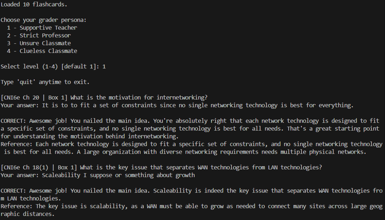

Local AI Study & Flashcard Assistant
Built an offline command line assistant that extracts text from lecture slide PDFs to generate structured Q&A flashcards using a local Llama 3.2 model. Implemented an interactive quiz mode featuring real-time token streaming, four selectable AI grader personas, and Leitner-style spaced repetition tracking.
Technologies: Python, Ollama (Llama 3.2), pydantic, pypdf, JSON